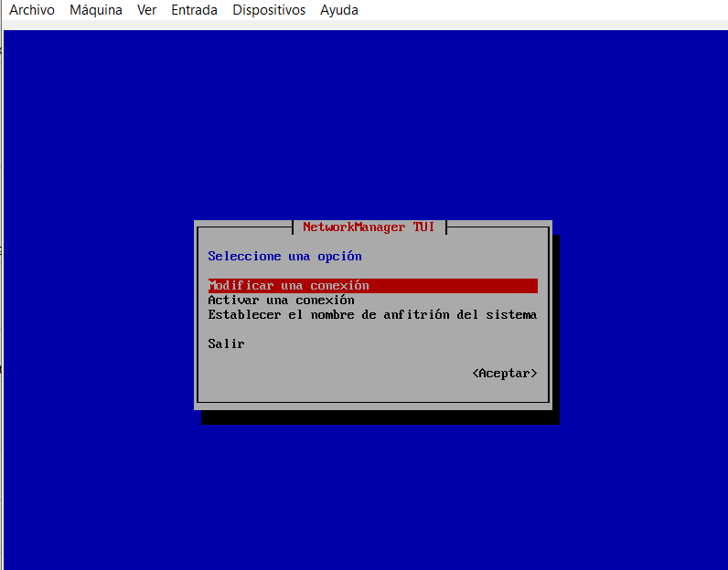

DNS: Sistema de Nombres de Dominio-Domain Name System
Puerto UDP 53
Es un sistema que se utiliza para traducir los nombres de dominio de sitios web en direcciones IP numéricas que las computadoras puedan entender y procesar.
Cada vez que introduces una URL en tu navegador web, el navegador realiza una consulta de DNS para encontrar la dirección IP numérica correspondiente al nombre de dominio. Si la consulta es exitosa, la computadora puede conectar con el servidor web que aloja el sitio web solicitado y descargar la página web.
Para empezar: el adpatador de red debe estar en NAT o Adaptador puente para tener conexion a internet y poder descragar los paquetes de los servicios a instalar. Al ingresar al centos debe ingresar como super usuario:

Proceso de Instalacion:
Para empezar la insltalacion se debe emplear el comando "nmtui" para activar tarjeta de red.


Despues se hacemos un reset y Ping a Google para comprobar la conexión
Ahora se procede a instalar el paquete del servicio:
y al finalizar la instalacion se vera así
Se modifica el adaptador de Red a red interna
Nuevamente nmtui para generar la conexión, en configuracion manual y ademas tendra asignada la ip del servidor, la puerta de enlace y la ip del dns que sera la misma del servidos, como se muestra en la imagen:


Despues se hace la configuración del archivo named.conf como muestra la imagen y se hace enter
Aparecera en pantalla el siguiente archivo el cual se debe modificar y debe quedar de la siguiente manera

También se modifican la inversa y la directa y las últimas dos líneas se comentan, se guarda el archivo con ctrl + O seguido de enter seguido ctrl + X:

Ahora se copeara el archivo de directa para la inversa y se confgura el archivo:
La configuarcion del archivo debe quedar asi: (El 1 hace referencia al ultimo octeto de la ip del servidor en mi caso es 192.168.16.1)
Se darán los permisos, para ello primero se ven los permisos de todo el grupo y se configuran para que todos este en un mismo named
Editar el archivo resolv.conf y guardar:
Tambien se tiene que editar el host, quedando de la siguiente manera:
Ahora abrimos el puerto 53 TCP y UDP en el firewall para poder hacer pruebas con un cliente. Esto lo podemos hacer ya sea agregando los puertos y protocolo uno por vez o agregando el servicio. Una vez agregado, comprobamos.

Habilitamos el servicio para que inicie con el Sistema
Así ya estará configurado el servicio DNS del servidor y se puede proceder a hacer las pruebas con el cliente.